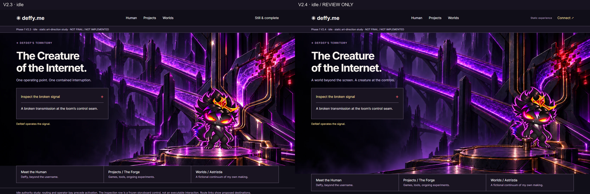
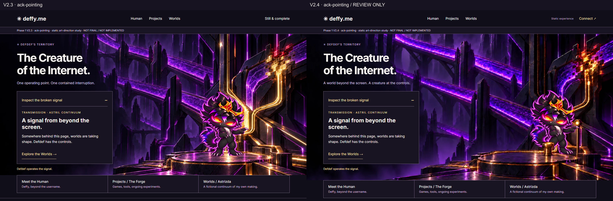
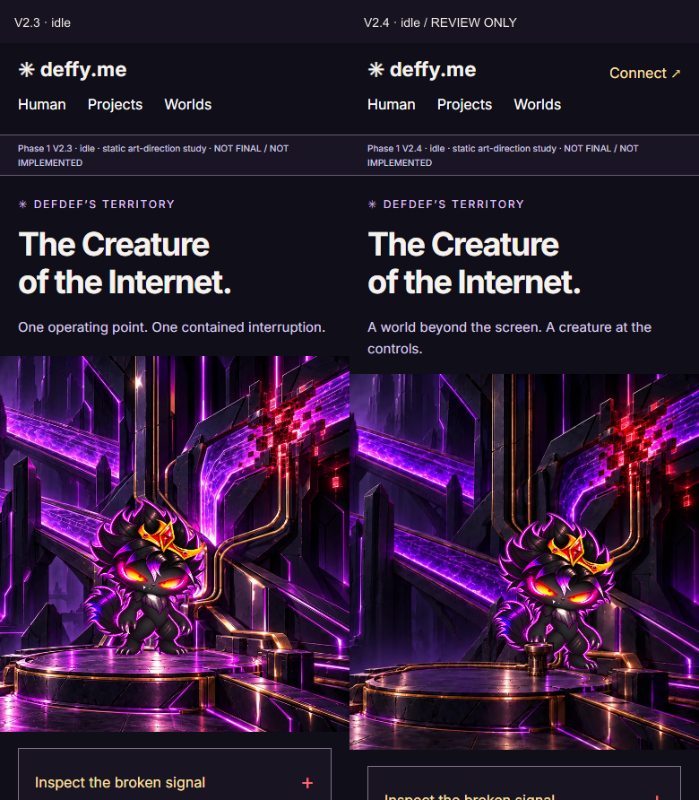
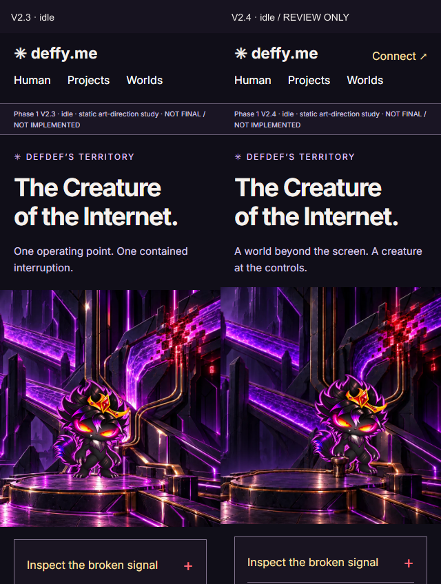
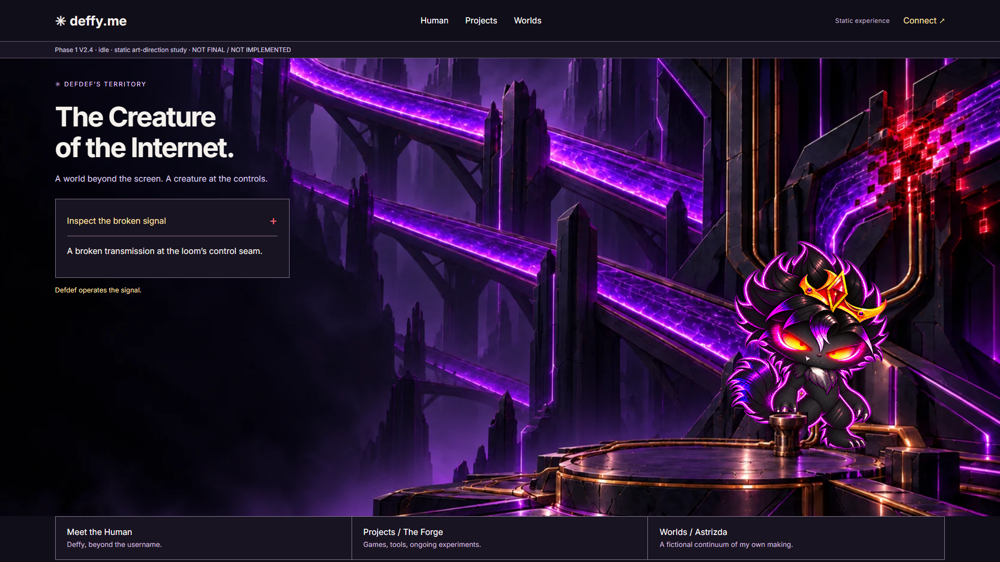
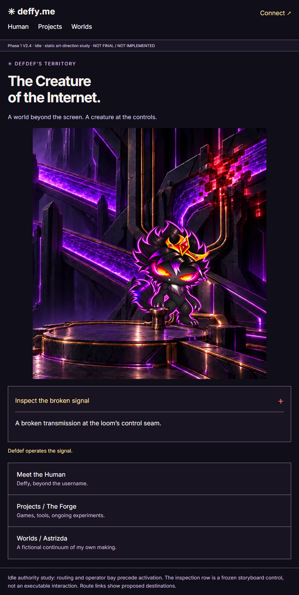
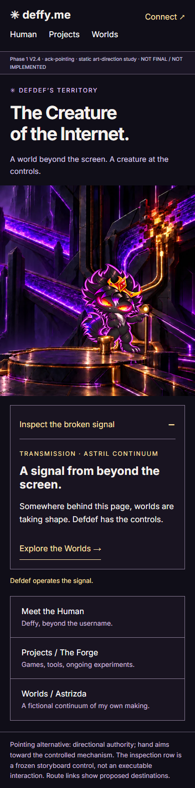
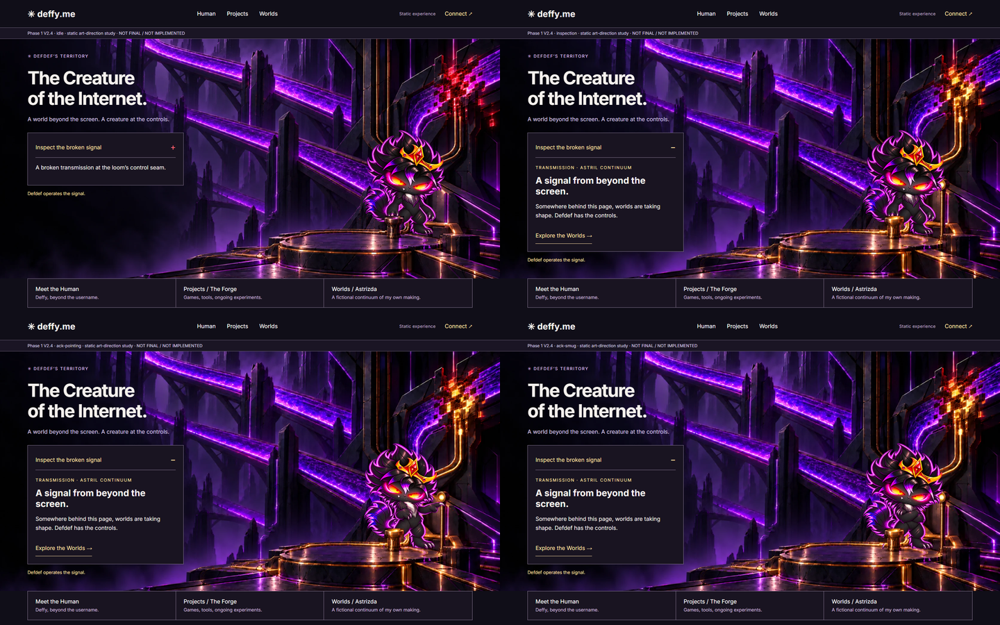

Phase 1 V2.4 · review only
Defdef at the controls
A darker near field, continuous physical receiver, restored Connect and provisional pointing acknowledgment. No production implementation or final acceptance.
Read the refinement report · Supplied review · Pending viewer worksheet




Previously missing evidence




Individual plates
Idle · Inspection · Pointing · Smug · Settled
25 viewport/state conditions: JS disabled and OS reduced motion. Maximum height spread 0.016px, floor-anchor spread zero. No unfamiliar-viewer test has been run; exact saturation calibration and owner acceptance remain open.
Canonical references: Default · Pointing · Smug. Source bytes stay unchanged.